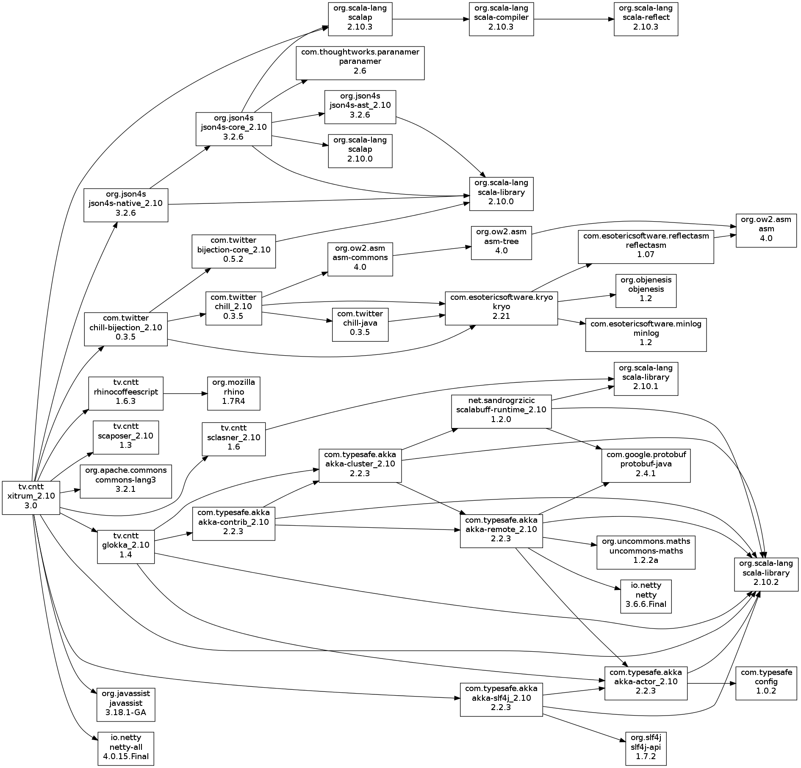

Dependencies
This chapter lists all dependency libraries that Xitrum uses so that in
your Xitrum project, you can use them directly if you want.

- Scala:
Xitrum is written in Scala language.
- Netty:
For async HTTP(S) server. Many features in Xitrum are based on those in Netty,
like WebSocket and zero copy file serving.
- Akka:
For SockJS. Akka depends on Typesafe Config,
which is also used by Xitrum.
- Hazelcast:
For distributing caches and server side sessions.
- Rhino:
For Scalate to compile CoffeeScript to JavaScript.
- JSON4S:
For parsing and generating JSON data. JSON4S depends on
Paranamer.
- Sclasner:
For scanning HTTP routes in action classes in .class and .jar files.
- Scaposer:
For i18n.
- Commons Lang:
For escaping JSON data.
- Twitter Chill:
For serializing and deserializing cookies and sessions.
Chill is based on Kryo.
- SLF4J, Logback:
For logging.
The default template engine in Xitrum is xitrum-scalate.
It depends on Scalate and Scalamd.